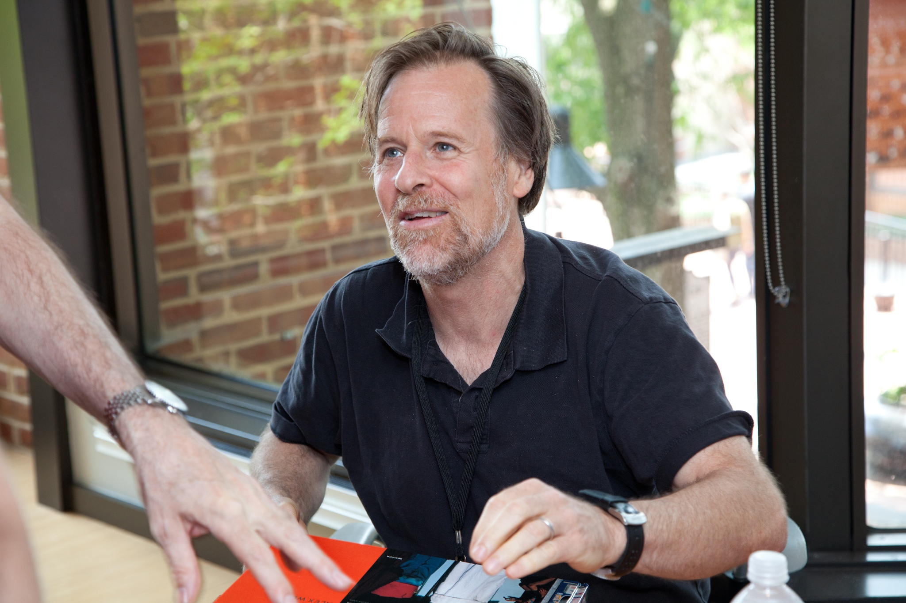
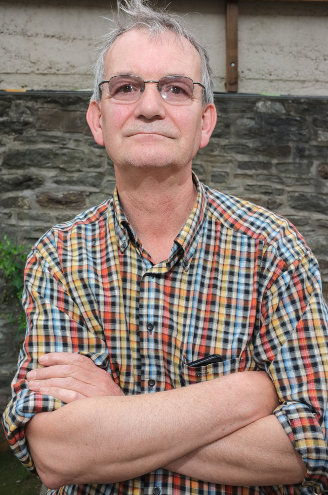

Fotògraf americà membre de Magnum. Va estudiar a Harvard i a l'Apeiron Workshop. Des dels anys 70 documenta zones de conflicte i cultures del Carib, Mèxic, Àfrica i la Mediterrània. Membre de Magnum des de 1976. El seu color és complex, multicapa, sovint amb tres plans actius simultàniament: la llum dura tropical actua com a agent compositiu.

Fotògraf britànic membre de Magnum des de 1994. Conegut per la seva visió satírica de la classe mitjana britànica, el turisme de masses i la cultura del consum. The Last Resort (1986) — la classe obrera britànica a la platja de New Brighton — el va fer famós i polèmic. "Sóc el fotògraf que la gent estima odiar." Usa Fuji Velvia i flash directe que ho fa tot semblar kitsch.